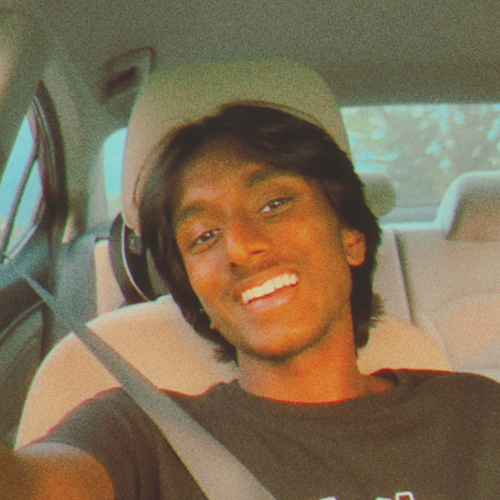

I build software for biological data analysis and ship full-stack web applications. Currently a student researcher studying gut bacteria in canine cancer, and a former intern at a YC biotech. Looking for internships that combine software and biology.

The lab I work in runs sequencing studies on canine cancer samples. The analysis pipeline for getting from raw reads to interpretable results used to involve a lot of manual steps. I built a set of R pipelines that tie together Bioconductor and mothur outputs to automate the 16S and shotgun workflows and generate the downstream statistical summaries.
Finding clubs and organizations at Minnesota schools was difficult due to fragmented and outdated information across multiple sources. I built a platform to centralize this data with real-time search and filtering. It currently serves 3,500+ students. The system was designed and implemented end‑to‑end by me, including the database schema and CI/CD pipeline.
My family's temple needed to send IRS-compliant donation statements to hundreds of donors every year. They were doing it by hand. I sat with the finance team, learned what compliance required, and built a tool that generates and emails thousands of email receipts automatically. It's been running for two years. Probably the most directly useful thing I've built.
I'm a high school senior in Plymouth, MN, taking classes at the University of Minnesota through PSEO. Right now I split my time between a microbiome research lab at UMN and coursework across CS, biology, as well as medical ethics and startup strategy.
I got into computer science first, but over time I realized how much impact and relevance coding has in biology. Now I'm interested in the space where computationally accelerated biology discoveries can make a real societal impact.
Outside of that, I'm a second-degree black belt and a former robotics team member. I play guitar, I run/lift, and I enjoy tweaking my Arch setup and playing Hollow Knight.
I'm always happy to talk about research, software, or anything else at all. Email is the best way to reach me.